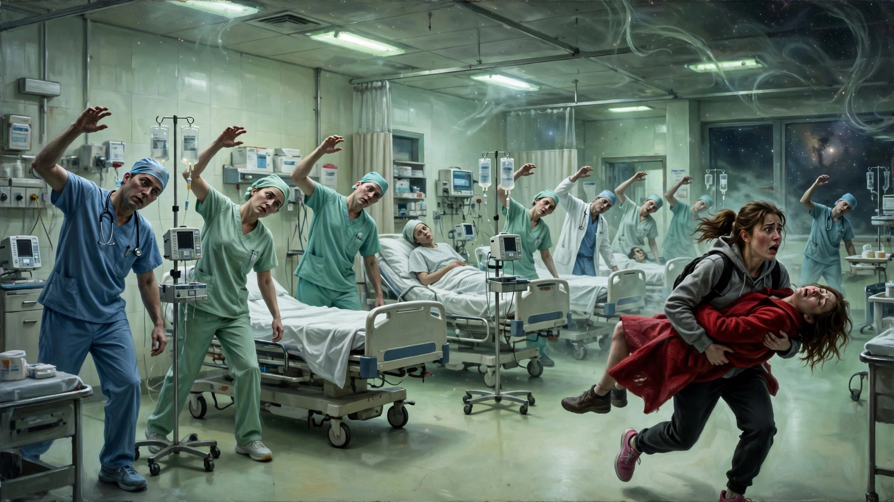
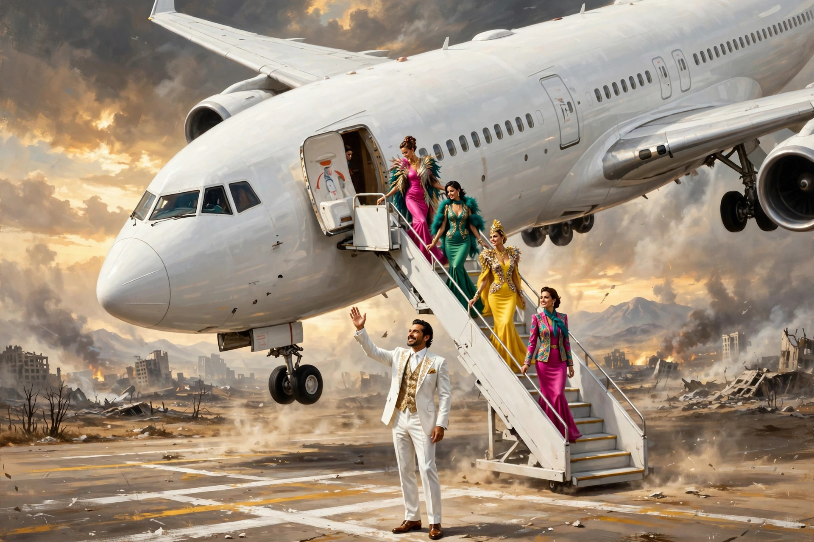

世界大同还是人类末日？
欢迎点击上方名片关注我，您的支持是我坚持原创的最大动力。
在看Apple的一部新剧《同乐者》，才看了两集，觉得太过瘾了，有点舍不得看下去。先写写感受吧。
（以下为前两集剧透，请谨慎阅读）
简单说，这是一部反乌托邦黑色幽默科幻剧。本剧从著名的美国射电望远镜阵列场景拉开序幕。（这个场景在外星人题材的科幻影视中频繁出现，最典型的例子是我最爱的科幻电影《超时空接触》（Contact，Jodi Foster主演)。）
望远镜阵列的工作人员收到了一组神秘信号，经过一系列排查，确定这组信号是来自地外文明。你以为接下来要么是像超时空接触那样和友好的高级外星文明建立联系并获得先进技术，要么是像独立日和三体那样遇到邪恶外星人，地球人联合起来展开反击。
结果都不是。这也是我大爱这部新剧的原因。主创虽然借鉴了前辈的一些思路，但在这个老赛道却开出了前所未有的新脑洞。
简短说就是，外星人发来的神秘数据原来是一组RNA。科学家用这些数据合成了一种生物体。由于不清楚这种生物体是病毒还是别的什么，也不知道对人类意味着是好事还是坏事，科学家打算先在小鼠身上接种这种生物体进行研究。
顺便提一个细节。在接收信号时和做小鼠试验等场景屏幕上出现了倒计时（有点像三体那种，不过是给观众看的，不是宇宙背景）。似乎提示有什么关键重大事件即将发生。
接着说后面的进展。小鼠试验果然出幺蛾子了。为什么说“果然“，因为这在科幻片（尤其是末世科幻片）里是滥大街的剧情了，没想到这部剧在这里也没能免俗。难道是为了证明shit happens的墨菲法则吗？一名科学家发现一只试验小鼠貌似嘎了，于是拿近查看。隔着手套触摸觉得摸不真切，于是脱了手套摸（我不知道这类关系全人类安危的重大动物试验有没有研究方案规范此类操作，但我一个外行都觉得直接上手是在作死）。结果小鼠突然诈尸，咬了科学家一口就跑了。科学家赶紧把手泡在洗液中清洗，但没过几秒就身体僵直抽搐。看样子是中了什么奇怪的病毒。

接下来，这种病毒很快通过唾液传播的方式传遍了全世界。传播方式不是新冠SARS飞沫这种，而是更简单粗暴的接吻。感染这种病毒的人有一个共同特点，就是身体原地僵直抽搐，无法言语，也无其他动作。
全人类的这种恐怖状况一直持续到前面提到的倒计时归零。这时，突然所有人的意识、动作都恢复正常。然后更诡异的一幕出现了。这些人无论年龄、男女、职业，以惊人的默契共同开始了灾后重建（感染期间由于很多人突然中招，导致人类社会瘫痪，自然发生很多灾难），似乎是一支训练有素的专业救援队伍。但考虑到这支队伍有几十亿人之巨，这么多人协同做同一件事，这种震撼和恐怖是人类历史上任何事情都无法比拟的。从这一刻开始，倒计时变成了正计时。
讲完背景事件，本剧的非凡女主该亮相了。女主名叫Carol，是一爆脾气姐。上一个我认识的同名爆脾气姐还是《行尸走肉》中的Carol，但这位目前还没看出有多大武力值，但脾气的确跟那位Carol前辈有一拼。Carol是一名畅销书作家，发生归零事件时，她正和女友在一起。当时女朋友正在刷手机，突然就倒地不起。Carol慌忙到就近的酒吧求助，却震惊地发现酒吧里的每个人都在身体僵直地抽搐中。她只得自己驾车送女友去医院，途中经过一辆翻了的警车，发现警察也是同样的诡异姿势。到了医院更震惊了，全医院的人，包括医生、护士、病人，全部一个姿势——僵直抽搐。不知过了多久，所有正在抽搐的人突然都醒了过来，如前所述那样默契地开始抢险、救灾、清理。当Carol试图向他们求助时，所有人都会同时转过来面对她以异常和善地口气异口同声地跟她打招呼，整齐划一到了匪夷所思的地步。
吓傻了的Carol赶紧带着女友的尸体驾车逃离医院回家。在家门口，她慌乱中找不到钥匙了。这时两个邻居小女孩过来又像前面那些人那样异口同声而不失礼貌地告诉她，钥匙是她自己藏在花坛下面了。Carol吓得不轻，手去花坛下面一摸果然找到钥匙。进到屋里，Carol做的第一件事关上所有窗户，并用能找到的任何东西遮挡。然后打开电视，发现很多电视台都是“雪花”，直到转到一个有信号的台，她又双叕震惊了：画面是美国白宫的新闻办公室，一名西装革履的政客面对镜头。这些不重要，震惊的点在于电视上的字幕赫然显示：Carol，我们在等你的电话（后面是电话号码）。Carol在震惊之余（这一晚上都各种”震惊“麻了），拿起电话打了过去。电视上的政客马上接了电话，开始解答Carol的疑问。
通过这番对话，Carol才大概搞清楚了情况。知道这是外星人通过发送病毒制造方法，直接接管了全人类。这个病毒的作用就是统一全人类意识为一体。至于动机为何，目前还没交代。之所以中招的所有人（以后为叙述方便起见统称为“联合体”——我自造的词）都对Carol如此友好 ，用联合体的话来说，是很好奇为什么还有Carol这样的“漏网之鱼”。联合体出于想好好研究Carol的出发点，对Carol极其友好 ，几乎满足她一切要求，也不厌其烦地回答任何问题。
Carol无奈地接受了自己突然成为“全村希望”的既成事实。毫无头绪之余，决定先在后院挖个坑把女友埋了。结果发现挖坑埋人也不是一件容易的事，累死累活才挖了一点点，仅凭一己之力不知猴年马月能挖好。正发愁之际，贴心的联合体派一位邻居姐姐来敲门，给Carol送水，还告诉她用十字镐挖省力。爆脾气的Carol根本不领情，直接当面把水倒在地上，然后叫邻居姐姐滚犊子。挖不动坑，Carol想出门散心。一出门又见到笑容可掬的邻居姐姐，Carol转身就想跑。突然想起什么，回到房间抓起自己写的新书。然后拿着新书封面对着邻居姐姐的脸一比，见鬼了，邻居姐姐的脸就是照封面上画的脸长的。联合体为了接近Carol不可谓不费尽心机。但想想也有点可爱。
Carol这时情绪却有点崩溃，爆脾气说来就来，对着邻居姐姐一通贴脸输出。没想到又出现了诡异的事，邻居姐姐突然倒地抽搐。后来Carol得知，当她对着联合体的一员贴脸输出时，可能能量太集中了，会导致联合体的一小部分成员死亡（表现就是抽搐）。但即使是一小部分，从全球来看，也是上万人。所以后来Carol很有负罪感，希望控制自己的爆脾气，这是后话。
好在邻居姐姐后来复活了，又带着友好如新的微笑来帮助Carol了。Carol听劝换了十字镐，但毕竟力气太小，还是费劲。还是贴心的邻居姐姐一次性解决了问题，直接派直升机送来一辆小型挖掘机空投到Carol的院子里。从这件“小事”上看，联合体可以调动地球上所有的资源，联合体的任何一员（哪怕是小孩）也可以毫不费力地完成人类知识范围内最高精尖的工作。这可能就是集中资源办大事的最佳范例吧。
接下来，Carol冷静开始思考下一步该怎么办。她问邻居姐姐，像她这种情况（没被感染）的全人类还剩多少人。回答是11人。Carol又问其中会英语的呢？5人。Carol知道提啥要求联合体都会照办而且能办到。于是她要求见见那5个人。接下来好戏又要登场了。
在联合体的安排下，5个人中的4个乘坐不同飞机到达离Carol最近的机场。先不说为啥还差一个，来的4个人三女一男，有中国人（老年女）、印度人（中年女），另外一个亚洲中年男，和一个黑人少女。Carol同他们见面简单聊了几句，确认了他们跟自己是同类人。然后Carol意识到少了一个人，问邻居姐姐咋回事。邻居姐姐说，那位选择单独坐一驾有亿点点特别的飞机，随后就到。
说曹操曹操到。先是一阵巨吵的引擎声把大家的注意力吸引过去，接着一驾体型硕大的喷气式客机缓缓映入眼帘，并占据了整个画面。机身上赫然写着The United States of America。经常坐总统专机的同学们都知道，这就是著名的美国总统专机“空军一号”。飞机停稳，一名身材高大、穿着时髦的拉丁裔（看上去像）男士出现在舷梯口，对大家微笑招手示意，那气派一点不输川宝。

这位就是迟到的第5个幸存者了。人齐了，Carol也不及细想，就向邻居姐姐提出，她和另外五人上飞机去开个会，其他人都离开。邻居姐姐欣然照办。Carol及其他四人登上飞机，惊奇地发现机上除了时髦男，机上还有一队貌似超模的空姐，穿得五颜六色花枝招展的。看来这哥儿们真是懂得享受的。
大家坐定，Carol开始提问，下一步怎么办。其他五人面面相觑，不知她何所指。她只得耐心解释，现在这个世界被外星人接管了，你们不觉得一切都不正常吗？大家仍是茫然的眼神，尤其是时髦男，他端着手中的红酒指了指豪华的飞机陈设，反问道这不很好吗？他继续说，现在世上只有和平，没有战争、饥荒和污染，难道这世界不是更好了吗？那位中国大姐接下来绘声绘色地说北京动物园的动物都满大街跑了，脸上很是兴奋的表情。印度裔女士则说，这些人都很快乐啊，Carol问，你怎么知道。印度裔女士，我问过啊。接着反问，你没问过他们？Carol继续强调自己的观点，他们是人类的幸存者，其他人都成了被外星人控制的联合体了。如果不想法做点什么，人类这个物种就要灭绝了。但不管她怎么说，大家对她都是一副无法理解的表情。Carol一阵窒息，感觉没法跟这些人沟通。
接下来，在时髦男的提议下，所有人来到欧洲某处风景优美的地方（应该是坐空军一号）聚餐。所有人都表情松弛、喜悦，仿佛在度假一般，除了忧心忡忡的Carol。她对大家的麻木不仁感到愤怒，但又无能为力。在席间，她为了证明自己关于联合体的观点，不惜施展毒舌，向印度裔女士十多岁的孩子（也是联合体一员）发问。问的是一些妇产科手术的细节，然后那孩子一本正经地用严谨的医学语言对答如流。印度裔女士连忙打断，斥责Carol连孩子都不放过。Carol哭笑不得，她正是为了证明，你眼中的孩子已经不是原来那个孩子，而是掌握着全人类所有知识的联合体的一员，所以他才能轻松回答那么专业的问题。可是，印度裔女士显然不吃这一套，她眼中的孩子始终是孩子。Carol出离愤怒地离席，转身对其他五人喊: You are the traitors of the human race!（你们是人类的叛徒）（看到这里莫名的喜感）
其他细节不展开说了。不管后面会不会烂尾，这前两集的脑洞、节奏、展开都足够使这部剧跻身优秀剧集行列了。Carol的个性我也很喜欢，天生的leader。庆幸人类幸存者中有这么一位，还算给人类火种留下了点希望。期待她后面更多的精彩表现。至于联合体希望建立的一个新世界到底是乌托邦还是反乌托邦，也是一个值得思考的问题。